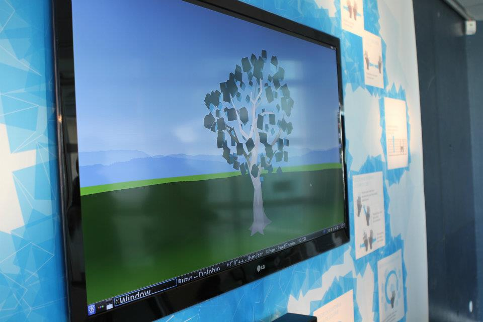

Zombie ipsum reversus ab viral inferno, nam rick grimes malum cerebro. De carne lumbering animata corpora quaeritis. Summus brains sit, morbo vel maleficia? De apocalypsi gorger omero undead survivor dictum mauris. Hi mindless mortuis soulless creaturas, imo evil stalking monstra adventus resi dentevil vultus comedat cerebella viventium. Qui animated corpse, cricket bat max brucks terribilem incessu zomby.
Zombie ipsum reversus ab viral inferno, nam rick grimes malum cerebro. De carne lumbering animata corpora quaeritis. Summus brains sit, morbo vel maleficia? De apocalypsi gorger omero undead survivor dictum mauris. Hi mindless mortuis soulless creaturas, imo evil stalking monstra adventus resi dentevil vultus comedat cerebella viventium. Qui animated corpse, cricket bat max brucks terribilem incessu zomby.
Pour la sortie de la version 6.0 de leur application pour iPhone, l’équipe Mobiletag souhaite ajouter des fonctionnalités et ce faisant en refondre graphiquement l'interface. Ma mission sur ce projet s’est étendue du wireframing à la réalisation de l’interface utilisateur en accord avec la charte graphique Mobiletag. L’objectif est de privilégier la simplicité d’usage et la facilité de compréhension de l’application.
Mobiletag est une application qui permet de scanner tous types de codes (QR Codes, codes-barre, etc), et d’accéder à des offres promotionnelles, des informations produits, des comparateurs de prix et des avis consommateurs. Sa fonction historique conserve tous les scans effectués par type de codes pour y accéder ultérieurement. L’application permet aussi de créer des QR Codes de tous types.
Le choix graphiques ont été guidés par un souhait du client de se rapprocher du style de l’application Android, en s’éloignant du concept de design skeuomorphique amené par Apple (donner à un objet virtuel l’apparence d’ un objet réel). Designer cette application a donc impliqué d’ajouter ces nouvelles fonctionnalités en adaptant l’expérience utilisateur aux usagers d’iOS et en simplifiant graphiquement l’interface.
Le festival de Saintes, organisé tous les ans par l'association de l'Abbaye aux Dames, est un acteur majeur de la musique baroque, du classique et de la musique contemporaine.
J’ai été amenée à travailler sur le design du site du festival de Saintes pour le compte de Geoffrey Dorne et d'après sa direction artistique. J'ai réalisé les gabarits web pour la programmation, les fiches événement, ainsi que pour les pages de contenu éditorial.
Cette mission de courte durée m’a donné la possibilité de travailler pour le secteur de la musique qui me tient particulièrement à coeur.
L’Arbre à souvenirs numérique est une installation interactive réalisée pour l’Université de Cergy-Pontoise et livrée en juin 2012. Ce projet a été réalisé dans le cadre d'un projet tutoré, lors de ma dernière année d'études (licence professionnelle Communication et media).
Dans le hall du site des Lettres et Sciences Humaines de l'Université, on trouve un cerisier japonais sur lequel les étudiants accrochent des mots contenant leurs souvenirs. La mission consiste en la réalisation de son homologue numérique pour le pôle Sciences et techniques.
L'Université souhaitant fédérer la communauté d'étudiants et d'anciens, nous décidons d'un commun accord d'offrir une installation permanente à l'intérieur de la maison des étudiants, liée à un site web. L'emplacement de l'installation ainsi que des questions de budget orientent notre choix vers l’utilisation du hand-tracking via camera et l’exploitation du SDK Kinect.
Au sein d'une équipe de quatre informaticiens, un développeur web, une chargée de communication et trois designers, mon travail s'est concentré sur l'expérience utilisateur et la scénarisation de l'installation, ainsi que sur le design de l'interface web.
Nous désirons que les utilisateurs puissent immortaliser un instant grâce à un message, à des photos ou des vidéos et qu'ils puissent explorer ces souvenirs, qui, liés les uns aux autres s'illustrent sous la forme d'arbre.

Le site web qui vient en parallèle permet aux anciens de l'Université de pouvoir participer à l'expérience. Il présente l’installation et permet de promouvoir le réseau des étudiants ainsi que les partenaires. Ces facteurs nous ont poussés à concevoir l’affichage des souvenirs en timeline et non en 3D à l’image de l’installation.
L’Arbre à souvenirs numériques a été présenté lors de la Semaine de la Recherche et de l’Innovation du Val-d’Oise, du festival les Bains Numériques et de Futur en Seine 2012.